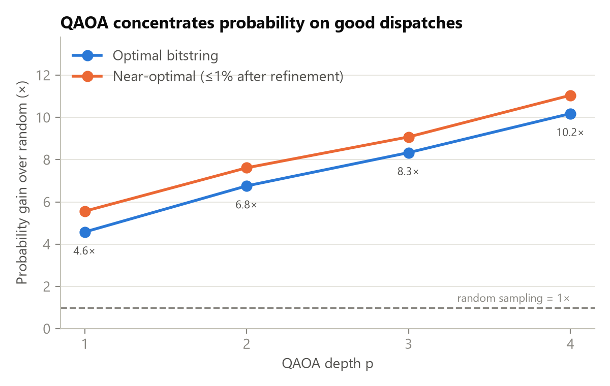
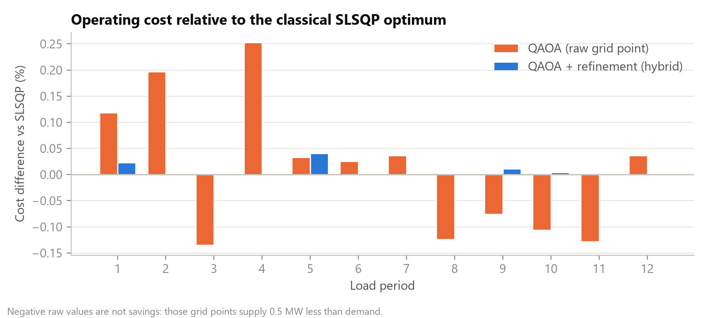
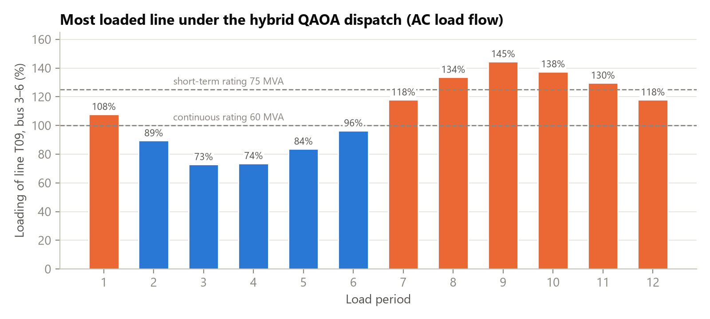

EEE mini project · RGUKT Nuzvid · 2026
QAOA-Based Economic Load Dispatch Using QUBO Formulation
J. Karthikeya, A. Krishna Chaitanya, N. Ramesh, M. Harika · Guide: B. Madhusudhan Rao
We wrote the economic load dispatch of the 6-bus, 3-generator Wood–Wollenberg system as a 12-qubit QUBO and solved it with the Quantum Approximate Optimization Algorithm for all 12 periods of a daily load profile. We compared it with standard algorithms, ran it on a real IBM quantum processor, and checked every dispatch with an AC load flow.
Method
Each generator output is encoded with 4 bits (steps of 10, 7.5 and 9 MW), so the unit limits hold by construction. Power balance becomes a quadratic penalty with weight A = 20, the smallest value in a sweep that keeps the QUBO optimum within 0.5 MW of demand. The substitution x = (1 − Z)/2 gives an Ising Hamiltonian with 12 Z terms and 66 ZZ terms.
The circuit (RZ, RZZ, RX gates, depth p = 1–4) is trained on the CVaR of the energy (α = 0.05) with COBYLA and INTERP initialisation. The five lowest-energy sampled dispatches are then refined by SLSQP, each unit moving at most one grid step, to meet demand exactly.
Results



Comparison with standard algorithms
240 runs each (20 seeds × 12 periods). Success: within 0.1% of SLSQP and balanced.
| Method | Mean gap | Worst gap | Success | Time / period |
|---|---|---|---|---|
| QAOA + refine (12-bit QUBO) | 0.007% | 0.040% | 100% | 0.28 s* |
| Exhaustive + refine (same QUBO) | 0.007% | 0.040% | 100% | 10 ms |
| Simulated annealing + refine (same QUBO) | 0.029% | 0.437% | 92.5% | 71 ms |
| PSO, dependent unit (Gaing 2003) | 0.000% | 0.000% | 100% | 13 ms |
| GA, dependent unit | 0.000% | 0.000% | 100% | 80 ms |
| PSO, penalty | 0.645% | 2.190% | 13.8% | 10 ms |
| GA, penalty | 0.763% | 3.011% | 7.5% | 81 ms |
* Simulated sampling, after about 22 s of training per period. SLSQP itself takes about 1 ms.
No speed-up is claimed. Classical solvers handle this small convex problem in milliseconds. The project shows that the quantum formulation is correct and that the circuit amplifies good dispatches. The QUBO route matters for problems that are binary by nature, such as unit commitment.
Real IBM quantum hardware
ibm_marrakesh (156-qubit Heron), period 1, p = 1, 4096 shots. At 6 qubits the hardware found the
optimal dispatch 2.4× more often than random, keeping about 90% of the simulator's gain, and the refined
dispatch equals the optimum. At 9 qubits, 144 two-qubit gates of noise remove most of the gain.

Losses and AC load flow
With loss coefficients derived from the line data, the hybrid method stays within 0.08% of the loss-inclusive optimum. Losses of 2.7–9.2 MW add 2.0% to the daily cost. A Newton–Raphson load flow, validated against PYPOWER, confirms voltages (1.009–1.070 pu) and reactive limits. It also shows that line T09 (bus 3–6) is overloaded at high load, up to 145% at the peak. The classical optimum overloads it in the same way, because ELD ignores line limits.


Reproduce
Python 3.11, Qiskit 2.6.2. Clone the repository, run pip install -r requirements.txt, then
python scripts/run_all.py, run_baselines.py, run_losses.py and
plots.py. Seeds are fixed. Test-system data: J. F. Prada, PhD thesis, CMU 2017, App. D, with
MATPOWER case6ww.